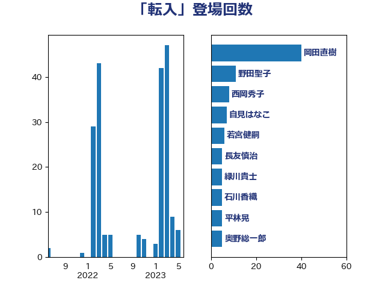

単語「転入」

| 岡田直樹 | 自由民主党 | 40 回 |
| 野田聖子 | 自由民主党 | 11 回 |
| 西岡秀子 | 国民民主党 | 8 回 |
| 自見はなこ | 自由民主党 | 7 回 |
| 若宮健嗣 | 自由民主党 | 6 回 |
| 長友慎治 | 国民民主党 | 5 回 |
| 緑川貴士 | 立憲民主党 | 5 回 |
| 石川香織 | 立憲民主党 | 5 回 |
| 平林晃 | 公明党 | 5 回 |
| 奥野総一郎 | 立憲民主党 | 5 回 |
| 塩崎彰久 | 自由民主党 | 5 回 |
| 高木かおり | 日本維新の会 | 4 回 |
| 河野太郎 | 自由民主党 | 4 回 |
| 岸田文雄 | 自由民主党 | 4 回 |
| 尾身朝子 | 自由民主党 | 4 回 |
| 谷公一 | 自由民主党 | 3 回 |
| 玄葉光一郎 | 立憲民主党 | 3 回 |
| 高橋光男 | 公明党 | 2 回 |
| 舞立昇治 | 自由民主党 | 2 回 |
| 永岡桂子 | 自由民主党 | 2 回 |
| 松野博一 | 自由民主党 | 2 回 |
| 後藤茂之 | 自由民主党 | 2 回 |
| 平木大作 | 公明党 | 2 回 |
| 山本佐知子 | 自由民主党 | 2 回 |
| 吉良よし子 | 日本共産党 | 2 回 |
| 佐藤啓 | 自由民主党 | 2 回 |
| 住吉寛紀 | 日本維新の会 | 2 回 |
| 高橋千鶴子 | 日本共産党 | 1 回 |
| 高橋克法 | 自由民主党 | 1 回 |
| 階猛 | 立憲民主党 | 1 回 |
| 鈴木英敬 | 自由民主党 | 1 回 |
| 越智隆雄 | 自由民主党 | 1 回 |
| 菊田真紀子 | 立憲民主党 | 1 回 |
| 石井章 | 日本維新の会 | 1 回 |
| 石井啓一 | 公明党 | 1 回 |
| 田村智子 | 日本共産党 | 1 回 |
| 宮下一郎 | 自由民主党 | 1 回 |
| 大家敏志 | 自由民主党 | 1 回 |
| 和田有一朗 | 日本維新の会 | 1 回 |
| 中川康洋 | 公明党 | 1 回 |
| 下条みつ | 立憲民主党 | 1 回 |